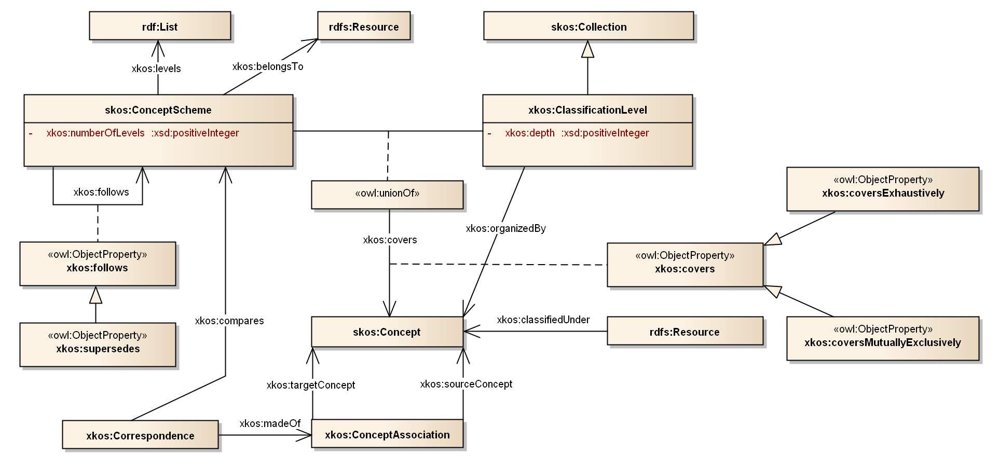
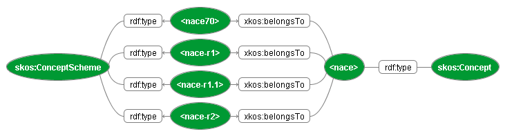
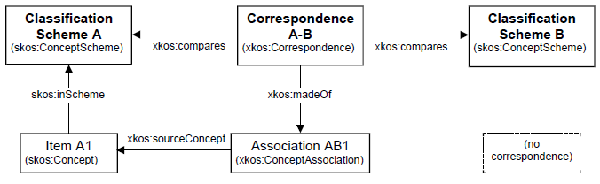
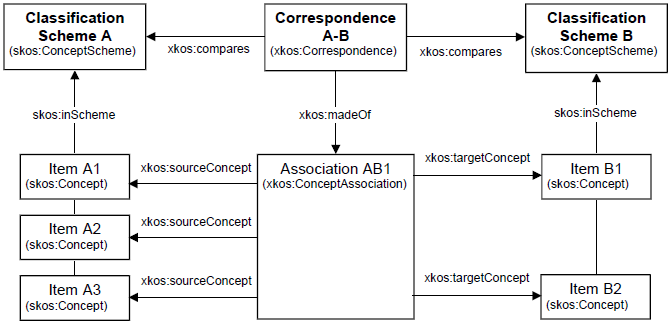
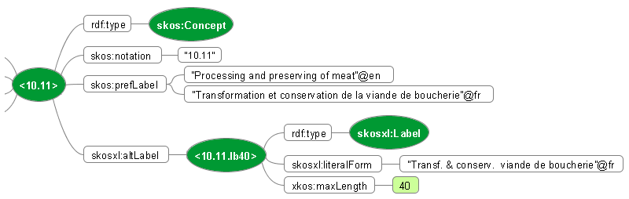
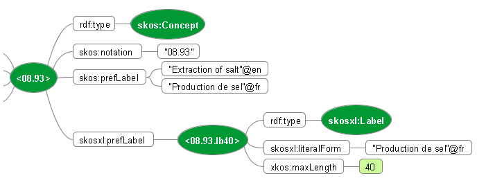
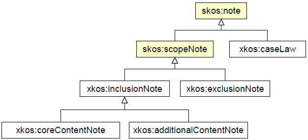
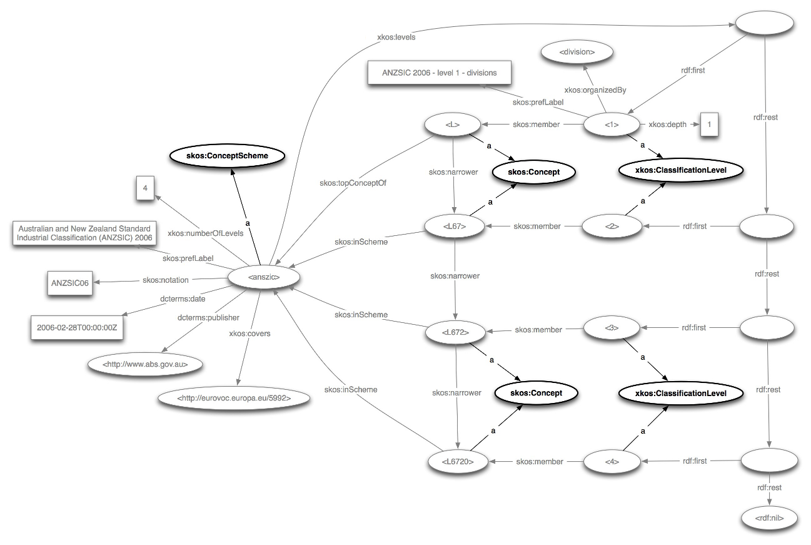
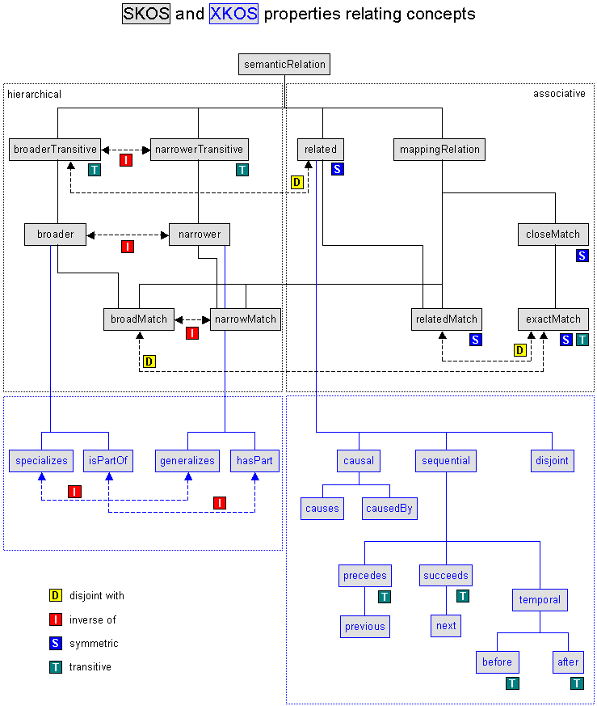

(Authors affiliations were recorded at the beginning of the writing of this document and might have changed since.)
Abstract
Semantic technology associated with Linked Open Data (LOD) is gaining much broader use and acceptance. Marrying LOD techniques to those of the international statistical community is the goal. Specifically, the use of the Simple Knowledge Organization System ([SKOS]) for managing statistical classifications and concept management systems is addressed, since SKOS is widely used. LOD is used to create Web artifacts that machines can interpret, so publishing machine readable statistical classifications and other concept management systems as SKOS instances is desired. We found that SKOS is insufficient for the problem. No aspect of SKOS was found to be wrong, just incomplete. Therefore, we propose an extension to SKOS, which we call XKOS.
Status of This Document
This document is the first published version of this product by the DDI Alliance.
For changes since the last draft, see the GitHub repository.
GitHub Issues are preferred for
discussion of this specification.
1. Background and Motivation
Semantic technology associated with developments of the Semantic Web and particularly Linked Open Data (LOD) is gaining much wider use and acceptance. The purpose of current efforts is to marry LOD techniques with needs of the international statistical community. Specifically, we address the use of the Simple Knowledge Organization System (SKOS), a LOD specification, to satisfy the requirements of classification systems and concept management in general for the statistical community.
The specifics will be described below, but we found that SKOS is insufficient to represent the needs of statistical classifications and concept management. No aspect of SKOS was found to be wrong, just incomplete. Therefore, we propose an extension to SKOS, which we call XKOS.
SKOS concept schemes are defined from the point of view of thesauri, which rely on the loosely defined notions of broader than, narrower than, and related to relationships. Statistical classifications on the other hand rely on the hierarchical relations, which are called generic (generic-specific) and partitive (whole-part). Further, statistical classifications, through their hierarchies, are structured according to levels. Levels correspond to all those concepts that are same distance from the top of the hierarchy, and levels are used as a means to identify concepts within a classification used to classify instances at the same specificity. Finally, concept management requires the use of associations that are more specific than related to. Causal, sequential, and temporal relations are defined.
The proposed extensions to SKOS were not only guided by the needs of the statistical community but by requirements laid out in ISO standards on terminology, such as ISO 704:2009 ([ISO704]) and ISO 1087-1:2000 ([ISO1087]). These standards describe and define the constructs and relations necessary for concept management and a more complete description of statistical classifications. These documents describe concepts, the terms and codes that designate them, relations that may exist among them, the structure of concepts, and the relationship between concepts and objects in the world they classify.
The result is a more unified approach. This approach is incorporated into the new XKOS.
2. Introduction
2.1 Understanding statistical classifications
This section provides a brief introduction to the terminology relevant to the understanding of statistical classifications.
The United Nations Expert Group Meeting on International Statistical Classifications writes in [UNSTATS] :
Generally a statistical classification is a set of discrete, exhaustive and mutually exclusive categories which can be assigned to one or more variables used in the collection and presentation of data, and which describe the characteristics of a particular population.
Readers can refer to [UNSTATS] for more background information on statistical classifications.
A Statistical Classification Scheme (SCS) is a concept scheme which includes concepts associated codes (numeric string labels), short textual names (also labels), definitions, and longer descriptions that include rules for their use. It can be flat (i.e., one level) or hierarchical. By a hierarchy, we mean a system of concepts where each has zero or one parents and zero or more children. The root, or top category, has no parent; the leaves, or bottom categories, have no children; and the rest have one parent and one or more children.
If an SCS is hierarchical, it is with the added proviso that all its categories are grouped into levels. In every SCS, the root concept is implicit and is often referred to as the defining concept for the SCS. All the concepts in one level are the same number of relationships away from the root, and this number is known as the depth of the level. All the concepts at each level are mutually exclusive and exhaustive, meaning each unit can be classified to one and only one concept per level.
Each level is defined by its own concept, as the collection of concepts at a particular level have a common overall meaning. For instance, the first level below the root in the North American Standard Industrial Classification ([NAICS]) is known as Sectors, and Manufacturing is one of the sectors; these sectors are the broadest industry categories.
The most important use of a classification scheme is to classify and organize units within some domain, for example business establishments by industry. NAICS is used for this in the US, but due to limitations in coverage for some geographic areas, establishment sizes, or NAICS concepts, not enough data might be available to report meaningfully at all levels. So, the lowest level with meaningful data in most of the concepts is used. However, what determines “meaningful” is a statistical consideration and out of scope for this specification.
Practically speaking, the rows in tables and the dimensions used to specify measures in a time series are major uses of SCSs in data dissemination. Aggregated data in tables and series are classified by given levels of SCSs. If the data are sparse at that level, then there is a danger that data about individuals (people or businesses) is recoverable. In this case, the next higher level is used, and the data are aggregated some more into the broader categories. This is an important reason for the hierarchical design of SCSs.
Another use of SCSs is in data collection. The possible answers to questions on a form or in a questionnaire are the categories in SCSs. Another way SCSs are used in data collection is through classifying textual responses. For instance, the US American Community Survey asks respondents to briefly describe their jobs, and these descriptions are classified to NAICS and the Standard Occupational Classification ([SOC]).
Statistical agencies that manage SCSs sometimes make versions to reflect changes in the subject matter domain, and these versions are separate SCSs. However, they belong to the same family, and that is known as a classification. For instance, NAICS is updated every five years, and each version (a separate SCS) is known by its year.
Other notions linked to classifications, for example correspondence tables, are introduced in the next sections. A model for describing and managing classifications developed by the international statistical community can be found in the Neuchâtel model [NEUCHATEL]. Further examples of statistical classifications are the ISCED for education, ISCO for occupations, ISIC and NACE for economic activities ([ISCED], [ISCO], [ISIC], [NACE]). A complete overview of the statistical classifications that are used at world (e.g. United Nations) and regional levels (e.g. European Union) is available at RAMON ([RAMON]).
2.2 Managing terminological features of classification schemes
In terminology, concepts are designated by signifiers which denote them. A signifier is typically an alphanumeric string, symbol, or some physical phenomenon such as voltage. Signifiers are assigned to denote concepts and are used to communicate concepts much as words, which are alphanumeric strings, do in natural language.
Designations come in several kinds: terms are linguistic expressions (i.e., words in natural language); codes are non-linguistic alpha-numeric strings of a specified length; and symbols are pictures, sound waves, etc. Other kinds of designations are possible as well.
In classification schemes for statistics, the concepts in the scheme, referred to as categories, are designated in several ways in practice. There are codes, short "labels", long "labels", and possibly others. Concepts also have definitions, relationships to other concepts, and explanatory text associated with them.
In SKOS, there are many properties that allow one to record the various designations of a concept: prefLabel; altLabel; hiddenLabel. All are repeatable for different languages. One drawback is the insistence on a preferred label. For statistical classifications, the preference for some designation depends on the context of its use. Codes are used for classification, data representation, and data interoperability. Short labels, a kind of term, are used in reports and the stubs of tables. Long labels, another kind of term, which are intended to convey much of the meaning of the designated cateory, are used in semantic interoperability. Each is “preferred” in its main areas of use. This is described in Section 8.1.
Relationships between concepts, along with the definitions of the concepts, are the main way semantics are captured. The semantics of each relationship are based on the related concepts and the meaning of the linkage itself, called a relation. For instance, the various authors of this paper are related both as professional colleagues and as friends. Each friendship, for instance, is described by the use of the “friend” relation and by the people themselves. Each friend linkage has the same semantics, so “friend” is a relation. Likewise, “professional colleague” is a relation. SKOS provides only a limited set of relations.
Some relations are important enough to define in advance because their use is pervasive. Two in particular are the hierarchical relations: generic and partitive. These relations are regularly employed in statistical classifications. The generic relation refers to type – sub-type, or “kind of”, relationships (a person is a kind of mammal). Partitive relations are used to describe part – whole relationships (an engine is part of a car). This is described in Section 9.
3. Overview of XKOS
XKOS extends SKOS with two main objectives: the first one is to allow the description of statistical classifications, the second one is to introduce refinements of the semantic properties defined in SKOS.
In order to describe classifications, XKOS draws from the Neuchâtel model [NEUCHATEL], which is a well known standard in the statistical community: the notions of classification levels (Section 6) or correspondence tables (Section 7) are directly taken from this model. Some aspects of the model are rendered in XKOS differently (e.g. classification families by the 'covers' property) or in a more general way (concepts associations, for example). Other aspects (e.g. indexes) are not covered by XKOS. XKOS also defines a few new additional properties that are not present in the Neuchâtel model. A new version of the Neuchâtel model has recently been created and included in the General Statistical Information Model ([GSIMSCM]).
The figure below gives an overview of the SKOS/XKOS model for representing classifications and their components. This model will be described in sections 5 to 7.
Figure 1 – Overview of the SKOS/XKOS model for classifications

XKOS also defines documentary properties for classifications (Section 8). In particular, specializations of the SKOS scope note property are proposed in order to represent the different types of explanatory notes that usually come with statistical classifications.
The other objective of XKOS is to make available to concept or classification schemes designers the semantic properties defined by ISO 704 and ISO 1087-1. Those properties are defined in Section 9, and their articulation with SKOS semantic properties is described. An overall view of the SKOS and XKOS property structure can be found in Annex B.
4. XKOS Namespace and Vocabulary
The XKOS namespace URI is:
http://rdf-vocabulary.ddialliance.org/xkos#
The prefix xkos will be associated to this namespace in all this specification.
The XKOS vocabulary is a set of URIs, given in the left-hand column in the table below. The right hand column indicates in which section below the corresponding term is explained in more detail.
RDF, RDFS and OWL vocabularies are also used, with their usual URIs and prefixes. Information on these standards can be found on the W3C web site.
The RDF examples are expressed with the Terse RDF Triple language (Turtle) [TURTLE]. Unless otherwise specified, these examples use http://example.org/ns/ as a base namespace; resource names between angle brackets represent URIs in this namespace. Note however that individual resource names used as examples are entirely fictious.
5. Classifications and classification schemes
5.1 Representation
In order to represent classifications and classification schemes, XKOS does not define specific classes but uses directly SKOS classes, adding to them different properties that specifically apply to classifications or classification schemes.
Each major version of a classification is represented in XKOS by a skos:ConceptScheme. All the versions of the same classification are grouped under a single resource identifying the classification itself by the xkos:belongsTo property. XKOS does not declare a formal range for xkos:belongsTo, and does not define a class to represent the classification itself; it is recommended to model it as an instance of skos:Concept that will serve as an entry in statistical classification registries, but another class could be used as well.
For example, in the diagram below, the european Statistical Classification of Economic Activities (NACE) is a skos:Concept, and each version of the NACE (the original 1970 version, the 1990 NACE rev. 1, the 2003 NACE Rev. 1.1 and the 2008 NACE Rev. 2) is a skos:ConceptSchemes linking to the NACE by the xkos:belongsTo property.
For example, the european Statistical Classification of Economic Activities (NACE) will be a skos:Concept, and each version of the NACE (the original 1970 version, the 1990 NACE rev. 1, the 2003 NACE Rev. 1.1 and the 2008 NACE Rev. 2) will be skos:ConceptSchemes linking to the NACE by the xkos:belongsTo property.
Figure 2 – The NACE classification and the classification schemes that belong to it

Note that, while XKOS considers that each major version of a classification is a separate skos:ConceptScheme, it is agnostic on what happens to the classification items (skos:Concepts) inside the classification. In particular, and depending on the situation, a new major version of a classification may redefine new URIs for every item, or may reuse the URIs of the items existing in the previous version.
Readers should also be aware that the Provenance Ontology [PROV-O], which was not available at the time of writing of this specification, introduces the related notion of "entity specialization" (prov:specializationOf). This can be an alternative approach for describing the versioning of classifications.
5.2 Versioning – managing information over time
The precise definition of what constitutes a version of a skos:ConceptScheme, skos:Collection or skos:Concept is out of scope for this model, but validity and version information can be represented in simple ways.
The property dcterms:valid can express the temporal validity of a concept, classification scheme, etc. In the case of classification, the major versioning activity takes place at the classification scheme level, so that is where the property will normally be attached. When no validity information is attached to a skos:Concept representing a classification item, it is usual to assume that the validity of the item is the same as the validity of the classification scheme it belongs to.
The succession in time of classifications and classification schemes is expressed by the xkos:follows property, which is defined at the skos:ConceptScheme level. For example, NACE rev. 2 followed NACE rev. 1.1. In this particular case, the new revision also obsoleted the previous one: the xkos:supersedes property conveys this additional meaning. xkos:supersedes is a sub-property of xkos:follows.
When a major version of a classification follows another, the statistical agencies usually have to know how the items of the previous version have evolved under the new version: this is important for the continuity of time series, indexes, national accounts, etc., to give a few example. Thus, it is very common that the agency responsible for the classification establishes a list of correspondences between the items of the two versions: this is a particular example of a correspondence (cf. Section 7).
5.3 Variants
In certain circumstances, statisticians need to "customize" a classification scheme for a specific use, by restricting the coverage, merging or splitting certain items at a given level, etc. In particular, when a new version of a classification scheme is being elaborated, it is useful to test different variants. The xkos:variant property can be used to represent the relation between the base classification scheme and its variant(s). skos:ConceptScheme is the domain and range of this property.
5.4 Coverage
A classification covers a defined field: economic activity, occupations, living organisms, etc. XKOS specifies the xkos:covers property to express this relation. The field covered should be represented by a skos:Concept, for example a term from a well-knowned thesaurus like EuroVoc ([EUROVOC]) or the Library of Congress Subject Headings ([LOCSH]). If the coverage of the given field is complete (i.e. all notions in the field can potentially be classified under the classification), we say that the coverage is exhaustive. If there is no overlap between the classification items at a given level of the classification, we say that the skos:Concepts representing the items are mutually exclusive. The xkos:coversExhaustively and xkos:coversMutuallyExclusively sub-properties of xkos:covers are introduced to represent these notions. Well-defined classifications usually cover their field in a exhaustive and mutually exclusive way (they form a partition of the field): in this case, xkos:coversExhaustively and xkos:coversMutuallyExclusively will be used together.
5.5 Classifying resources
The main purpose of a classification is to classify the entities that belong to or operate in the field that it covers. In linked data terms, classifying results in the creation of a RDF statement where the resource representing the entity is the subject and the concept representing the classification item is the object. XKOS defines a generic property, xkos:classifiedUnder, that can be used in such statements, but classification criteria are often quite complex: for example, a same enterprise could be classified in different items of a classification of activities, depending on the rules that are used to measure its main economic activity. Thus, it is expected that xkos:classifiedUnder will be specialized for different classification systems.
6. Classification levels
Classification schemes are frequently organized in nested levels of increasing detail. ISCO-08, for example, has four levels: at the top level are ten major groups, each of which contain sub-major groups, which in turn are subdivided in minor groups, which contain unit groups. Even when a classification is not structured in levels ("flat classification"), the usual convention, which is adopted here, is to consider that it contains one unique level.
In XKOS, a classification level is defined as a specialization of skos:Collection named xkos:ClassificationLevel. A classification level can bear an integer property, xkos:depth, that indicates its distance from the (abstract) root node of the hierarchy. In the ISCO case, the level of sub-major groups will have a xkos:depth of 2, whereas the level of unit groups will have a xkos:depth of 4. The unique level of a flat classification would have a xkos:depth of 1. In addition, a xkos:numberOfLevels property is defined for the classification schemes to document the number of levels they include: ISCO-08 would have an xkos:numberOfLevels of 4.
The levels of a classification scheme are organized as an rdf:List (implying order), starting with the most aggregated level. The skos:ConceptScheme representing the classification scheme points to the rdf:List of its xkos:ClassificationLevels with the xkos:levels property.
Example 10.1 below gives a good representation of this construction.
Individual skos:Concept objects are related to the xkos:ClassificationLevel to which they belong by the usual skos:member property (going from the level to the classification item).
A classification level is often characterized by a generic name for the classification items that it regroups. The ISCO names "major groups" the items of the first level, "sub-major groups" the items of the second level, etc. The NACE uses the terms "sections", "divisions", "groups" and "classes"; the NAICS has "sectors", "subsectors", "groups", etc. This information can be rendered in XKOS by the property xkos:organizedBy that links the xkos:ClassificationLevel object to a skos:Concept representing the generic item for this level (e.g. the concept of an ISCO major group, of a NACE section, etc.).
Also, classification items of a given levels usually have a code (expressed by the skos:notation property) that conforms to a specific structure. For example, the NACE sections are identified by a capital letter between A and U; NACE divisions are identified by two-digits codes, etc. In order to capture this information, XKOS defines the xkos:notationPattern property. This property is attached to a classification level and should contain a regular expression refecting the code structure of the items of this level.
7. Correspondences and concept associations
Different classification schemes can cover the same field, or fields that are semantically related. This induces semantic relations between the classification items that belong to these schemes. A simple example of this is given by two successive major versions of a classification: some items may remain unchanged in the new version, but others will disappear, merge, be created, etc. More complicated n to m correspondences between items of the two versions are frequent.
A much more complex example of relations between classifications or classification schemes is given by the international system of economic classifications maintained by the United Nations Statistical Division. The European view of this system is well described in the online publication of the NACE Rev. 2 (chapter 1.1). The economic classifications forming this system are linked either by a common structure which is more and more detailed from international to European and then national levels, or by semantic correspondences between the economic fields covered: activities, products and goods (e.g. activities create products). Here again, the high-level links established between classifications result in more fine-grained correspondences between items: one defined activity will create one or more specific products.
Since classification items are represented as SKOS Concepts, we could use the usual SKOS associative properties to represent correspondences between them. However, this simple approach has some limitations:
As mentioned above, relations between items in correspondences are often m to n, whereas SKOS properties relate one unique concept to another unique concept. It is always possible to decompose an m to n relation into several 1 to 1 relations, but it is better to have a global vision of a given correspondence. We also want to be able to represent 0 to n relations, for example when an item is created or disappears in a new version of a classification.
More globally, we want to be able to group all the fine-grained item associations that compose a given high-level relation between two classification schemes, such as the ones that exist in the international system of economic classifications. Such a collection of item associations is called a correspondence or conversion table, or sometimes a concordance. Further synonyms are correlation table and mapping.
Lastly, it is often useful to be able to attach additional information (for example notes) to items associations, for example to describe what proportion of the different items are linked in the association.
For these reasons, XKOS defines the xkos:ConceptAssociation class that can be used to represent correspondences between classification items when the SKOS properties are not sufficient. Each xkos:ConceptAssociation may have input or source skos:Concept(s) and output or target skos:Concept(s). The complete collection of such associations for all the concepts in two SKOS Concept Schemes forms a correspondence and is expressed as an instance of the xkos:Correspondence class. The xkos:madeOf property is used to link the xkos:Correspondence to its xkos:ConceptAssociation components. The xkos:compares property may be used to link directly the xkos:Correspondence to the classification schemes that it puts in relation.
The following figures illustrate two examples of concept associations between classification items. Example 10.3 below gives a more complex real-life example.
Figure 3.1 – Association example – Item with no correspondence

Figure 3.2 – Association example – m-n correspondence

The xkos:ConceptAssociation is similar to the Correspondence Item of the Neuchâtel model. However, the xkos:ConceptAssociation can describe the relationship of any number of source concepts to any number of target concepts rather than expressing the association through a set of pair-wise associations.
Well-defined classifications cover their field in a mutually exclusive way (cf. Section 5.4); hence it should be noted that the interpretation of relating multiple source or target concepts in a xkos:ConceptAssociation is the union of these concepts, since their intersection will be empty in mutually exclusive classifications.
As already mentioned, there are different types of correspondences between classifications, classification schemes or classification items:
Between classification on the same field, for example North American and European activities classifications
Between different linked fields, for example classifications of activities and products
Historical correspondence, for example SIC ([SIC]) to NAICS
Versioning of items over time within a given classification scheme
In this version, XKOS does not define any properties or sub-classes for xkos:Correspondence and xkos:ConceptAssociation in order to model these different types of correspondences. This may be added in a future version.
8. Documentation properties
Statistical classifications usually come with textual material that describe in detail the structure and use of the classification, the content of the different items, the past decisions taken on classifying field entities, etc. This material is organized in notes, called explanatory notes, that are attached to the various objects described above. XKOS defines the xkos:ExplanatoryNote class and a set of sub-properties of skos:scopeNote that correspond to a typology of explanatory notes which is widely used for statistical classifications.
In some circumstances, classification publishers desire to provide, in addition to the official labels, normalized fixed-length labels that can be used in situations where the labels length is constrained, for example in table headers. XKOS defines the xkos:maxLength property that can be used in combination with SKOS-XL xl:Label instances.
8.1 Additional labels
This section gives an example of how to define fixed-length labels while conforming to the SKOS integrity conditions.
Assuming that we want to define, for a given classification scheme, labels of maximum length of 40 characters to each item.
In all cases the skos:prefLabel property is used to express the full (official) label. For the additional fixed-length labels, skosxl:Label instances are created with the xkos:maxLength property indicating the maximum length of these additional labels. Two cases must be distinguished:
If the additional label is different from the full label, the skosxl:Label is attached by a skosxl:altLabel property.
If the additional label is equal to the full label, the skosxl:Label must be attached by a skosxl:prefLabel property in order to comply with the SKOS integrity rules about labels.
The following figures illustrate these two cases.
Figure 4 – Labels of maximum length


8.2 Explanatory notes
Classifications require a range of specialized explanatory notes that indicate various types of descriptive properties used in defining the concept. Explanatory notes describing the content of a concept have three main forms. Central content is a description of those things known specifically to be included in the concept. Limit content expresses those things that were either identified at a later point to be included, clarify decisions based on specific cases, or are otherwise clarifications of "gray" areas. Finally, concepts are defined as a set of things they exclude. These are things that might appear to be included but have been associated with other concepts in the classification. Exclusion statements provide both the list of items and their appropriate concepts.
Moreover, the actual classification of an item in one position or another of a statistical classification is often decided after a debate between experts. For example, when a new product appears, it is necessary to study its characteristics in respect to the design principles of the classification in order to determine where the product will be classified. Those decisions and the reasoning behind them are recorded and attached to the relevant items of the classification in order to be referred to later on. These special kinds of explanatory notes are called "case law" notes.
For the description of classification items contents, XKOS extends the skos:scopeNote annotation property, which is a sub-property of skos:note, to define additional sub-properties needed to support the model described above. The sub-properties added to skos:scopeNote include an xkos:inclusionNote and xkos:exclusionNote. Additional sub-properties were added to xkos:inclusionNote to further define the type of inclusion specification using the sub-properties xkos:coreContentNote (to identify central content) and xkos:additionalContentNote. For the recording of case law notes, XKOS defines the xkos:caseLaw as a direct sub-property of skos:note.
In paper or electronic documents, the following labels are generally found :
xkos:coreContentNote is generally labelled "This category includes", "This item includes", "This division includes", "Includes" or similar;
xkos:additionalContentNote is generally labelled "This category includes also", "This item includes also", "This division includes also", "Includes also", or similar;
xkos:exclusionNote is generally labelled "This category excludes", "This item excludes", "This division excludes", "Excludes" or similar;
The values of SKOS and XKOS annotation properties can directly be textual literals. However, in most cases, it is desirable to attach more properties to the explanatory notes, in particular versioning and authoring information. In these cases, explanatory notes will themselves be resources. XKOS defines the xkos:ExplanatoryNote class so that all resources corresponding to explanatory notes can be typed in a standard manner.
Figure 5 – XKOS annotations

XKOS defines the property xkos:plainText on xkos:ExplanatoryNotes as a way to capture the raw content of the note (text without formatting markup). If needed, other properties can be defined to further describe the note, typically to store variants of the text including markup. The definition of these properties is outside the scope of XKOS.
9. Semantic properties
The semantic properties extend the possible relations that can be applied between pairs of concepts. SKOS allows the following relations: has broader, has narrower, and related to. The first two are hierarchical relations, one in each direction. However, terminologists recognize two main kinds of hierarchical relations: generic and partitive. IsPartof and hasPart are partitive; and specializes and generalizes are generic. In addition, several detailed associations, the related to relations, are provided: causal and sequential. Causal has two directions: causes and causedBy, and sequential has two directions: precedes or previous, and succeeds or next. Previous and next have the additional criterion that they are transitive relations. In addition, temporal is a kind of sequential relation, which is subdivided into before and after, in addition which are transitive. Two concepts are disjoint if no objects correspond to both concepts at once.
The management of classification structures requires further specification of a number of SKOS terms in order to describe very specific relationships. XKOS has chosen to address these as refinements of existing SKOS terms whenever possible in order to facilitate understanding among users of related domain areas:
skos:broader and its inverse skos:narrower
skos:related a refinement of several associative properties
9.1 Hierarchical properties
The refinements of skos:broader and skos:narrower focus on the differentiating between the ideas of a generic relationship (generalized/specialized) and a partitive relationship (whole/part). These are important distinctions in many classification structures.
XKOS defines the following sub-type for skos:broader and skos:narrower
xkos:specializes is a sub-property of skos:broader
xkos:generalizes is a sub-property of skos:narrower
The term Car has a part with the term SteeringWheel.
The Occupational Injury and Illness Classification System ([OIICS]) offers more realistic examples. This classification defines four different schemes called Nature, Body part, Source and Event.
The idea is to classify each work related injury or illness which causes missed time at work with these four facets.
The Body Part facet scheme uses partitive relationships throughout:
These features are related through the specific-generic relation.
It should be noted [ISOTHES] also extends the SKOS hierarchical properties with equivalent notions. Thus, the following property equivalences are declared :
xkos:generalizes is equivalent to iso-thes:narrowerGeneric
xkos:specializes is equivalent to iso-thes:broaderGeneric
xkos:hasPart is equivalent to iso-thes:narrowerPartitive
xkos:isPartOf is equivalent to iso-thes:broaderPartitive
9.2 Associative properties
XKOS provides several refinements to skos:related which define causal and sequential relationships. These refinements transpose the content of ISO standards on terminology, such as ISO 704:2009 ([ISO704]) and ISO 1087-1:2000 ([ISO1087]). These properties are initially separated into causal and sequential relationship types (xskos:causal and xkos:sequential) which are then further defined as shown in the diagram in Appendix A.
Causal relationships are either xkos:caused or xkos:causedBy.
Sequential relationships may be transitive or intransitive. When transitive the relationship is expressed by the pair xkos:precedes and xkos:succeeds. When not transitive the relationship is expressed by the pair xkos:previous and xkos:next.
9.2.1 Example of transitive and non-transitive sequential relationships
Consider the following sequence going left to right:
A → B → C → D → E
If a transitive relationship to C is being described, C precedes D and E (which succeed C) and succeeds A and B (which precede C). The relation implied by xkos:precedes is n-m and xkos:succeeds is n+m where m is an number >= 1.
If a non-transitive relationship needs to be expressed between C and D then C is previous in order to D and D is next in order C. The relation implied by xkos:previous is n-1 and xkos:next is n+1.
Temporal relationships are a specific type of sequential where one event or object is before or after another in terms of time. Temporal relationships are transitive and are expressed as xkos:before and xkos:after.
Note that a concept may have a temporal aspect that is not sequential in nature but simply an expression of the period for which it is applicable. This is expressed using dcterms:valid which provides the date range of validity.
10. Examples
10.1 Statistical classification (ANZSIC)
The following figure gives an example inspired by the ANZSIC (Australian and New Zealand Industry Classification [ANZSIC]), which is a classification covering the field of economic activity. A small excerpt is shown here, limited to the classification object itself and its levels, as well as one item of the most detailed level (Class 6720 – Real Estate Services) and its parent items. Note that the URI employed in this example are entirely fictitious, since the ANZSIC has not yet been published as RDF.
Figure 6 – Statistical classification – ANZSIC

On the left of the figure is the skos:ConceptScheme instance that corresponds to the ANZIC 2006 classification scheme, with its various SKOS and Dublin Core properties. Additionnal XKOS properties indicate that the classification has four levels and covers the field of economic activity, represented here as a concept from the EuroVoc thesaurus. In this case, the coverage is intended to be exhaustive and without overlap, so xkos:coversExhaustively and xkos:coversMutuallyExclusively could have been used together instead of xkos:covers.
The four levels are instances of xkos:ClassificationLevel; they are organized as a rdf:List which is attached to the classification by the xkos:levels property. Some level information has been represented on the top level, for example its depth in the classification (xkos:depth) and the concept that characterizes the items it is composed of (xkos:organizedBy). In the same fashion, concepts of subdivision, group and class could be created to describe the items of the lower levels.
The usual SKOS properties are used to connect the classification items to their respective level (skos:member) and to the classification (skos:inScheme or its specialization skos:topConceptOf) for the items of the first level). Similarly, skos:narrower is used to express the hierarchical relations between the items, but the subproperties defined in this specification could also be used. For example, xkos:hasPart could express the partitive relation between subdivision 67 ("Property Operators and Real Estate Services") and group 672 ("Real Estate Services").
For clarity, the properties of the classification items (code, labels, notes) have not been included in the figure.
10.2 Fisheries – Simple hierarchy
This example shows the encoding of a simple set of three classification items found within the International Standard Statistical Classification of Aquatic Animals and Plants (ISSCAAP). A number of declarations are included for completeness that in reality would likely be grouped in a second common scheme to improve reusability, e.g. custom datatypes and classification families.
@prefix rdf: <http://www.w3.org/1999/02/22-rdf-syntax-ns#> .
@prefix xsd: <http://www.w3.org/2001/XMLSchema#> .
@prefix skos: <http://www.w3.org/2004/02/skos/core#> .
@prefix owl: <http://www.w3.org/2002/07/owl#> .
@prefix xkos: <http://rdf-vocabulary.ddialliance.org/xkos#> .
@prefix rdfs: <http://www.w3.org/2000/01/rdf-schema#> .
@prefix fi: <http://www.fao.org/fishery/ns#> .
# Datatypes, used to type notations which are used for codes
fi:ISSCAAPGroupCode a rdfs:Datatype ;
rdfs:comment "ISSCAAP Group code" ;
owl:onDatatype xsd:string ;
owl:withRestrictions (
[
xsd:pattern "[0-9]{2,}"
]
) .
fi:ISSCAAPDivisionCode a rdfs:Datatype ;
rdfs:comment "ISSCAAP Division code" ;
owl:onDatatype xsd:string ;
owl:withRestrictions (
[
xsd:pattern "[0-9]{1,}"
]
) .
fi:FAO3Alpha a rdfs:Datatype ;
rdfs:comment "FAO 3-Alpha code" ;
owl:onDatatype xsd:string ;
owl:withRestrictions (
[
xsd:pattern "[A-Z]{3,}"
]
) .
fi:FAOTaxonomicCode a rdfs:Datatype ;
rdfs:comment "FAO Taxonomic code" ;
owl:onDatatype xsd:string ;
owl:withRestrictions (
[
xsd:pattern "[0-9]{10,}"
]
) .
# This could probably be done using standards from the Darwin Core
fi:FAOScientificName a rdfs:Datatype ;
rdfs:comment "FAO Scientific name" ;
owl:onDatatype xsd:string .
# Create a concept for the family of classifications
fi:AquaticAnimalsAndPlants a skos:Concept ;
skos:prefLabel "Aquatic Animals and Plants Family of Classifications"@en .
# Create a concept for the classification that is independent of the set of versions
fi:ISSCAAP a skos:Concept ;
skos:prefLabel "International Standard Statistical Classification of Aquatic Animals and Plants 2005"@en .
# Generic classification levels that can be reused
fi:ISSCAAP_Division a skos:Concept ;
skos:prefLabel "ISSCAAP Division"@en .
fi:ISSCAAP_Group a skos:Concept ;
skos:prefLabel "ISSCAAP Group"@en .
fi:ASFIS rdf:type skos:Concept ;
skos:prefLabel "ASFIS"@en .
# Classification levels for this particular classification scheme
fi:ISSCAAP_L1 a xkos:ClassificationLevel ;
xkos:organizedBy fi:ISSCAAP_Division
xkos:coversMutuallyExclusively fi:AquaticAnimalsAndPlants ;
xkos:depth 1 ;
skos:member fi:ISSCAAP_3 .
fi:ISSCAAP_L2 a xkos:ClassificationLevel ;
xkos:organizedBy fi:ISSCAAP_Group ;
xkos:coversMutuallyExclusively fi:AquaticAnimalsAndPlants ;
xkos:depth 2 ;
skos:member fi:ISSCAAP_32 .
fi:ISSCAAP_L3 a xkos:ClassificationLevel ;
xkos:organizedBy fi:ASFIS ;
xkos:coversMutuallyExclusively fi:AquaticAnimalsAndPlants ;
xkos:depth 3 ;
skos:member fi:ASFIS_COD .
# The classification scheme
fi:ISSCAAP_2005 a skos:ConceptScheme;
skos:prefLabel "International Standard Statistical Classification of Aquatic Animals and Plants 2005"@en ;
xkos:belongsTo fi:ISSCAAP ;
xkos:coversMutuallyExclusively fi:AquaticAnimalsAndPlants ;
xkos:numberOfLevels 3 ;
xkos:levels ( fi:ISSCAAP_L1 fi:ISSCAAP_L2 fi:ISSCAAP_L3 ) ;
xkos:follows <http://www.fao.org/fishery/ns#ISSCAAP_2001> .
fi:ASFIS_COD a skos:Concept ;
skos:inScheme fi:ISSCAAP_2005 ;
skos:prefLabel "Atlantic Cod"@en ;
skos:prefLabel "Morue de l'Atlantique"@fr ;
skos:prefLabel "Bacalao del Atlántico"@es ;
skos:altLabel "Cod"@en ;
skos:altLabel "Morue"@fr ;
skos:altLabel "Bacalao"@es ;
skos:notation "COD"^^fi:FAO3Alpha ;
skos:notation "1480400202"^^fi:FAOTaxonomicCode ;
skos:notation "Gadus morhua, Linnaeus 1758"^^fi:FAOScientificName ;
xkos:specializes fi:ISSCAAP_32 .
fi:ISSCAAP_32 a skos:Concept ;
skos:inScheme fi:ISSCAAP_2005 ;
skos:prefLabel "Cods, Hakes, Haddocks"@en ;
skos:notation "32"^^fi:ISSCAAPGroupCode ;
xkos:generalizes fi:ASFIS_COD .
fi:ISSCAAP_3 a skos:Concept ;
skos:inScheme fi:ISSCAAP_2005 ;
skos:prefLabel "Marine Fishes"@en ;
skos:notation "3"^^fi:ISSCAAPDivisionCode ;
xkos:generalizes fi:ISSCAAP_32 .
10.3 Concept association
This example shows the use of the Correspondence and ConceptAssociation classes to create correspondences across two classification schemes; these might be different versions of one classification or two different classifications from the same family of classifications. in this example FAO Commodity List and the Central Product Classification V2.1 are used. It is only a fragment, and the actual classifications are not fleshed out as concepts. To see an example of that go to case 1.
The figure below gives a panoptical view of the semantic properties defined in SKOS and XKOS. Solid lines represent subsumption links, and dashed lines represent disjunction links.
Figure 9 – SKOS and XKOS properties

B. Acknowledgements
The authors would like to give special thanks to:
Thomas Bosch (GESIS, Leibniz Institute for the Social Sciences, Germany), who did all the UML modeling work and realized the ANZSIC figure.
Jannik Jensen (Danish Data Archive, Odense, Denmark), who participated in the first sub-team meetings on the XKOS vocabulary.
Most of the work on XKOS was done during two workshops titled "Semantic Statistics for Social, Behavioural, and Economic Sciences: Leveraging the DDI Model for the Linked Data Web" and held at Schloss Dagstuhl - Leibniz Center for Informatics in Wadern, Germany, September 11-16, 2011 and October 14-19, 2012.
The workshops were organized by:
Richard Cyganiak (DERI, National University of Ireland, Galway, Ireland)
Arofan Gregory (Open Data Foundation, Tucson, USA)
Wendy Thomas (Minnesota Population Center, University of Minnesota, USA)
Joachim Wackerow (GESIS, Leibniz Institute for the Social Sciences, Germany)
The authors of the paper would like to acknowledge the other participants to this workshop:
Archana Bidargaddi (Norwegian Social Science Data Services, Bergen, Norway)
Marcel Hebing (German Institute for Economic Research, Berlin, Germany)
Benedikt Kämpgen (Karlsruhe Institute of Technology, Germany)
Stefan Kramer (Cornell Institute for Social and Economic Research, Ithaca, USA)
Amber Leahey (Ontario Council of University Libraries, University of Toronto, Canada)
Olof Olsson (Swedish National Data Service, Göteborg, Sweden)
Abdul Rahim (Metadata Technology Inc., Washington, USA)
John Shepherdson (UK Data Archive, University of Essex, United Kingdom)
Humphrey Southall (Great Britain Historical Geographical Information System, University of Portsmouth, United Kingdom)
Johanna Vompras (Bielefeld University Library, Germany)
Benjamin Zapilko (GESIS, Leibniz Institute for the Social Sciences, Germany)
Matthäus Zloch (GESIS, Leibniz Institute for the Social Sciences, Germany))
The editor would like to thank the people who contributed during the public review, as well as the following persons who helped to integrate these contributions:
Share - copy and redistribute the material in any medium or format
Remix - remix, transform, and build upon the material
for any purpose, even commercially.
The licensor cannot revoke these freedoms as long as you follow the license terms.
Under the following terms:
Attribution. You must give appropriate credit, provide a link to the license, and indicate if changes were made. You may do so in any reasonable manner, but not in any way that suggests the licensor endorses you or your use.
No additional restrictions. You may not apply legal terms or technological measures that legally restrict others from doing anything the license permits.
Disclaimer
This deed highlights only some of the key features and terms of the actual license. It is not a license and has no legal value. You should carefully review all of the terms and conditions of the actual license before using the licensed material.
Creative Commons is not a law firm and does not provide legal services. Distributing, displaying, or linking to this deed or the license that it summarizes does not create a lawyer-client or any other relationship.